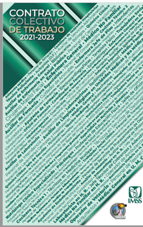
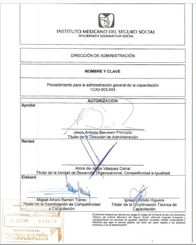

Objetivo
El programa de inducción al área y al puesto es una herramienta que permite a los trabajadores de
confianza, base, sustituto, temporal e interino, obtener conocimientos básicos de la unidad a la que
recién ingresan, así como al área y al puesto de trabajo, que le faciliten su integración y
desarrollo laboral.
Se imparte en los primeros cinco dias de que ingresa el trabajador, con el apoyo del jefe inmediato,
superior o a quien se designe.
Normatividad

Reglamento de capacitación y adiestramiento
Artículo 21
Las Dependencias del Instituto deberán invariablemente proporcionar a los trabajadores
inducción al área y al puesto al inicio de sus actividades en su adscripción o
categoría y reportar los avances de este programa.

Procedimiento para la Administración General de la Capacitación.
(1CA0-003-001) numeral 4.2.2.1.3.1
Los órganos operativos, remitirán las “Guías de inducción al área y al puesto” debidamente
requisitadas, a fin de que sean validadas, registradas en el Módulo de Capacitación
SIAP y remitidas al expediente histórico del personal.
¿Quién debe recibirla?
Los trabajadores descritos en el listado de movimientos quincenales que envía la oficina de Dotación
de Bolsa de Trabajo.
Esto es, personal con movientos de:
- Nuevo ingreso
- Cambio de adscripción
- Cambio de rama
- Promoción escalafonaria (interina y definitiva)
- Promoción confianza “A”
- Promoción confianza “B”
- Cambio de residencia
- Cambio de turno